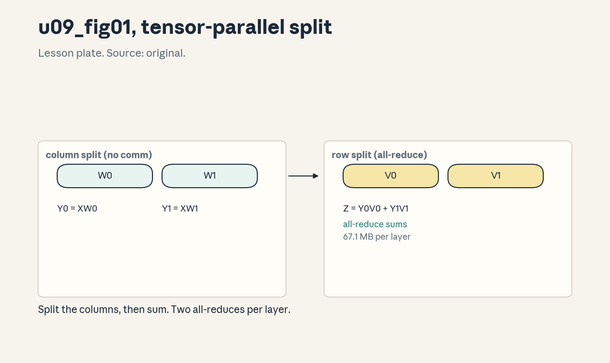
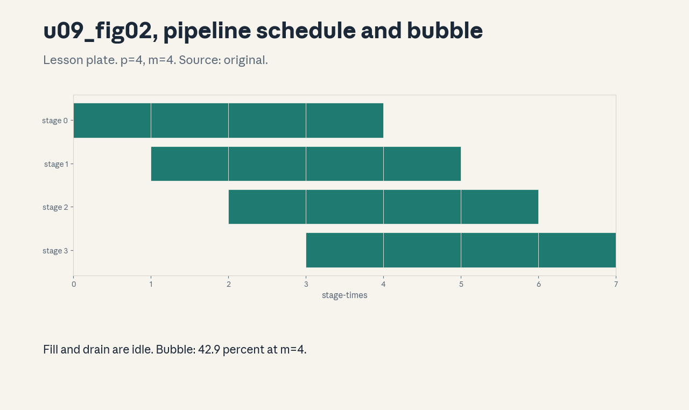
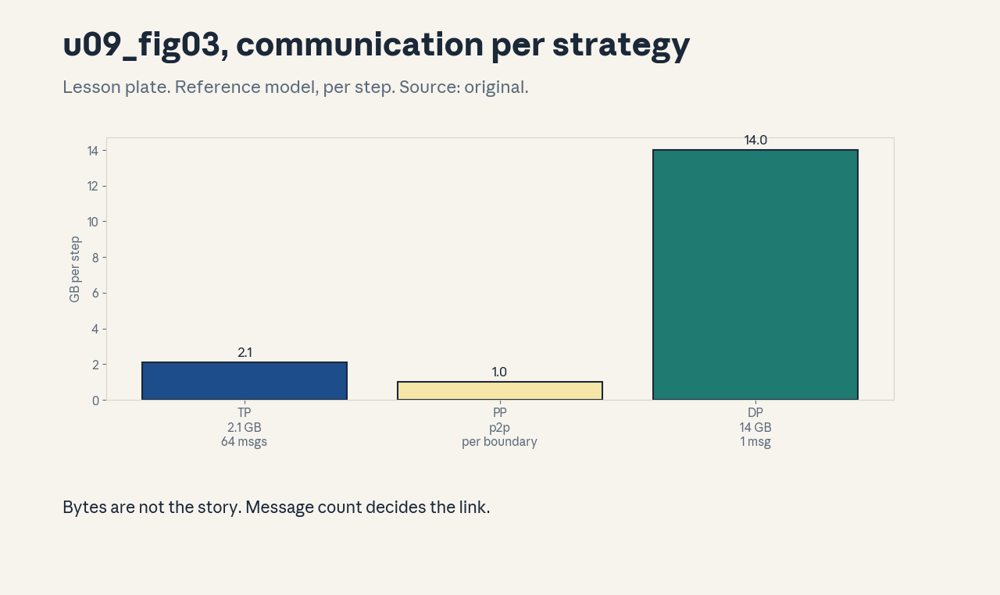

U09 · Model and hybrid parallelism
U09 , Model and hybrid parallelism
Prerequisites: P16, P17, P18. Bridge links in ../prerequisites.md.
Session: cross-cutting branch (distributed training reported across
course sessions, exact mapping in ../course_map.md).
Claim class: REQUESTED-BRANCH. All leaves PLANNED / SOURCE ATTRIBUTION
PENDING. Notation: see ../notation_and_shapes.md.
Standing note
No cluster on this box. Parallelism strategies are studied as layouts, time models, and numpy simulations, every number is computed from stated assumptions. Reference model: d=4096, L=32, 7B params, microbatch (b=2, T=2048), bf16.
Local remediation , the three axes
Read this if diagnostic items D10 or D12 were not full marks. Three
ways to split a model: data (U08, split the batch), tensor (split
each layer across GPUs), pipeline (split the layers across GPUs).
Tensor parallelism (TP) splits matrix multiplies and all-reduces per
layer: 67.1 MB per layer on the reference (from
assets/compute_u09.py, executed 2026-10-06). Pipeline parallelism
(PP) assigns layer ranges and pays a bubble: 42.9 percent at p=4, m=4.
Assessment: with TP=4, what are the per-GPU fp16 params of the 7B
model? Key: ../keys/u09_answers.md R1.
C01: Tensor parallelism
Leaf id cs336-U09-C01. Claim class REQUESTED-BRANCH.
Status PLANNED / SOURCE ATTRIBUTION PENDING.
-
Source mapping, scope, objectives, dependencies. Branch. Scope: Megatron-style intra-layer split. Objectives: describe the column/row split, count the all-reduces. Depends on P16, P17.
-
Motivating question and toy. Question: a single layer exceeds one GPU. How is it split? Toy from
compute_u09.py: TP all- reduce 67.1 MB per layer, 2.1 GB per 32-layer step. -
Mental model. Split attention heads across ranks (each rank holds d/tp of QKV and the output projection’s rows), split the MLP column-wise then row-wise. Each needs one all-reduce per sublayer to sum partial outputs: 2 per layer.
-
Objects, symbols, units, shapes, assumptions. tp: degree. MB per all-reduce. Assumption: the reference shapes.
-
Derivation / mechanism. Y = XW with W split by columns: each rank computes Y_i = XW_i (no comm). The next layer’s row-split needs the full Y: all-reduce sums the partial products before it.
-
Computed example. From
assets/compute_u09.py(executed 2026-10-06): 67.1 MB per layer, 2.1 GB per step. -
Algorithm and reference implementation. The split simulator: column split, partial products, all-reduce sum. About 10 lines.
-
Correctness checks and expected output. Split products sum to the unsharded result exactly. Expected outputs in the lab key.
-
Costs. 2 all-reduces per layer per step, latency-sensitive, so TP stays within a node (fast links).
-
Nearest alternative and selection boundary. ZeRO-3 (U08) for memory without per-layer comm. TP for layers that exceed one GPU or for inference latency.
-
Failure case and counterexample. TP=8 across slow links: the 2.1 GB per step at 200 GB/s is fine, but latency per all-reduce (64 per step) dominates small batches. The assumption “TP scales” breaks across nodes, keep TP intra-node.
-
Research reading and falsifiable extension. Reading: the Megatron paper (Shoeybi et al., 2020, primary). Extension: simulate tp=2,4,8 products, hypothesis: exact sums.
-
Assessment. (a) Recall: the column/row pattern. (b) Oral ladder: define the split, compute the comm, justify the two all-reduces, implement, compare with ZeRO-3, debug the cross- node case, critique the reference shapes, design the tp sweep. (c) Transfer: d=8192, tp=8. Recompute the per-layer comm. Answers:
../keys/u09_answers.mdA1. -
Lab and exercises. Lab U09 task 1 simulates the TP split. See
../labs/u09_lab.md. -
Visuals. Figure u09_fig01: lesson plate, the column/row split. Source: original. Render:
assets/render_u09.py.

C02: Pipeline parallelism
Leaf id cs336-U09-C02. Claim class REQUESTED-BRANCH.
Status PLANNED / SOURCE ATTRIBUTION PENDING.
-
Source mapping, scope, objectives, dependencies. Branch. Scope: splitting layers across stages. Objectives: describe the stage layout, define the bubble. Depends on P16, P17.
-
Motivating question and toy. Question: 32 layers, 4 GPUs: who holds what? Toy from
compute_u09.py: 8 layers/GPU, bubble 42.9 percent at m=4, 8.6 percent at m=32. -
Mental model. Stage i holds layers [8i, 8i+8). Microbatches flow through: stage 0 processes microbatch 0, passes activations to stage 1, and so on. Communication is point-to-point (activations/grads), not collective.
-
Objects, symbols, units, shapes, assumptions. p stages, m microbatches. Assumption: even layer split.
-
Derivation / mechanism. The pipeline fills in p-1 steps and drains in p-1 steps: bubble fraction = (p-1)/(m+p-1).
-
Computed example. From
assets/compute_u09.py(executed 2026-10-06): 42.9 percent (p=4,m=4), 8.6 percent (p=4,m=32). -
Algorithm and reference implementation. The pipeline schedule simulator: stage timelines. About 15 lines.
-
Correctness checks and expected output. Total time matches (m+p-1) stage-times, gradients match the unsharded run. Expected outputs in the lab key.
-
Costs. The bubble, point-to-point comm per microbatch per boundary.
-
Nearest alternative and selection boundary. TP (no bubble, more comm). PP for deep models across nodes.
-
Failure case and counterexample. m < p: the bubble exceeds 50 percent and most stages idle most of the time. The assumption “pipeline is efficient” breaks without enough microbatches, keep m >> p.
-
Research reading and falsifiable extension. Reading: GPipe (Huang et al., 2019, primary). Extension: sweep m in the simulator, hypothesis: bubble falls as 1/m.
-
Assessment. (a) Recall: the stage layout. (b) Oral ladder: define the bubble, compute the toy, justify p2p comm, implement, compare with TP, debug the m<p case, critique the even split, design the m sweep. (c) Transfer: p=8, m=16. Bubble and verdict? Answers:
../keys/u09_answers.mdA2. -
Lab and exercises. Lab U09 task 2 simulates the pipeline. See
../labs/u09_lab.md. -
Visuals. Figure u09_fig02: lesson plate, the pipeline schedule with the bubble. Source: original. Render:
assets/render_u09.py.

C03: The pipeline bubble
Leaf id cs336-U09-C03. Claim class REQUESTED-BRANCH.
Status PLANNED / SOURCE ATTRIBUTION PENDING.
-
Source mapping, scope, objectives, dependencies. S-branch. Scope: quantifying idle time. Objectives: derive the bubble formula, state how to shrink it. Depends on C02.
-
Motivating question and toy. Question: how much throughput does the bubble cost? Toy from
compute_u09.py: (p=4,m=4): 42.9%, (p=8,m=8): 46.7%. -
Mental model. Bubble = (p-1)/(m+p-1). Three levers: more microbatches (m), fewer stages (p), better schedules (C04).
-
Objects, symbols, units, shapes, assumptions. Percent. Assumption: uniform stage times.
-
Derivation / mechanism. Ideal time = m stage-times, actual = m+p-1. The ratio gives the formula.
-
Computed example. From
assets/compute_u09.py(executed 2026-10-06): 42.9 and 46.7 percent. -
Algorithm and reference implementation.
bubble(p, m): two lines. -
Correctness checks and expected output. p=1 -> 0, m -> inf -> 0. Expected outputs in the lab key.
-
Costs. Shrinking via m costs activation memory (more microbatches in flight).
-
Nearest alternative and selection boundary. Interleaved schedules (C04). The formula bounds the naive schedule.
-
Failure case and counterexample. Doubling m to halve the bubble doubles activation memory and OOMs. The assumption “m is free” breaks, the memory-bubble tradeoff is the real decision.
-
Research reading and falsifiable extension. Reading: GPipe analysis (primary). Extension: verify the formula in the simulator, hypothesis: exact.
-
Assessment. (a) Recall: the formula. (b) Oral ladder: define the fill/drain, compute the toy, justify the levers, implement, compare with 1F1B, debug the OOM, critique uniformity, design the verification. (c) Transfer: bubble must be < 10 percent at p=8. Minimum m? Answers:
../keys/u09_answers.mdA3. -
Lab and exercises. Lab U09 task 3 computes bubbles. See
../labs/u09_lab.md. -
Visuals. Audit row: the bubble table. No figure, tabular claim.
C04: Interleaved and 1F1B schedules
Leaf id cs336-U09-C04. Claim class REQUESTED-BRANCH.
Status PLANNED / SOURCE ATTRIBUTION PENDING.
-
Source mapping, scope, objectives, dependencies. S-branch. Scope: better pipeline schedules. Objectives: describe 1F1B and interleaving, state the memory cost. Depends on C02, C03.
-
Motivating question and toy. Question: can the bubble shrink without more microbatches? Toy from
compute_u09.py: 1F1B at p=4, m=32: ~9.4 percent bubble with ~4 microbatches of activation memory. -
Mental model. 1F1B (one forward, one backward): each stage alternates, keeping the pipeline full in steady state and limiting in-flight activations to ~p microbatches. Interleaved: each stage holds multiple layer chunks, shrinking the bubble further at the cost of more p2p comm.
-
Objects, symbols, units, shapes, assumptions. Schedule steps. Assumption: the backward takes ~2x the forward.
-
Derivation / mechanism. 1F1B’s steady state overlaps forward of microbatch i+1 with backward of i. The bubble concentrates at the start/end: ~(p-1)/m.
-
Computed example. From
assets/compute_u09.py(executed 2026-10-06): 9.4 percent, ~4 in flight. -
Algorithm and reference implementation. The 1F1B schedule simulator. About 15 lines.
-
Correctness checks and expected output. Matches the analytic bubble, activation count bounded by p. Expected outputs in the lab key.
-
Costs. Schedule complexity, interleaving adds comm.
-
Nearest alternative and selection boundary. GPipe (simple, more memory). 1F1B is the standard.
-
Failure case and counterexample. 1F1B with uneven stages: the slow stage sets the pace and the bubble formula underestimates. The assumption “uniform stages” breaks, balance first (C07).
-
Research reading and falsifiable extension. Reading: PipeDream-Flush (Narayanan et al., 2021, primary). Extension: simulate uneven stages, hypothesis: bubble exceeds formula.
-
Assessment. (a) Recall: the 1F1B pattern. (b) Oral ladder: define steady state, compute the toy, justify the memory bound, implement, compare with GPipe, debug the uneven case, critique the 2x assumption, design the simulation. (c) Transfer: memory allows 2 in flight, p=4. Options? Answers:
../keys/u09_answers.mdA4. -
Lab and exercises. Lab U09 task 4 simulates 1F1B. See
../labs/u09_lab.md. -
Visuals. Audit row: the schedule comparison table. No figure, tabular claim.
C05: Hybrid DP/TP/PP
Leaf id cs336-U09-C05. Claim class REQUESTED-BRANCH.
Status PLANNED / SOURCE ATTRIBUTION PENDING.
-
Source mapping, scope, objectives, dependencies. S-branch. Scope: combining the axes. Objectives: factor N into (tp, pp, dp), state the ordering rules. Depends on C01, C02, U08-C01.
-
Motivating question and toy. Question: 64 GPUs: what (tp,pp,dp)? Toy from
compute_u09.py: (8,2,4), (4,4,4), (2,8,4) all cover 64. -
Mental model. tpppdp = N. Rules: TP innermost (fast links, per-layer comm), PP next (p2p across nodes ok), DP outermost (all-reduce grads, most tolerant). Memory per GPU divides by tp*pp (params) and dp (batch).
-
Objects, symbols, units, shapes, assumptions. The triple. Assumption: a 3-tier network.
-
Derivation / mechanism. Each axis divides one dimension: params by tp (and pp for layers), batch by dp, optimizer by dp with ZeRO. The product covers N.
-
Computed example. From
assets/compute_u09.py(executed 2026-10-06): the three factorizations of 64. -
Algorithm and reference implementation.
factorize(N): enumerate triples with the ordering rules. About 10 lines. -
Correctness checks and expected output. Products equal N, tp <= node size enforced. Expected outputs in the lab key.
-
Costs. Tuning the triple is the distributed design problem.
-
Nearest alternative and selection boundary. Pure DP+ZeRO (simpler, fails when layers exceed memory). Hybrid when needed.
-
Failure case and counterexample. tp spanning slow links: per-layer latency kills throughput. The assumption “any factorization works” breaks, respect the link tiers.
-
Research reading and falsifiable extension. Reading: large-run system papers (primary). Extension: score the three factorizations by comm, hypothesis: (8,2,4) wins intra-node.
-
Assessment. (a) Recall: the ordering rules. (b) Oral ladder: define each axis, factor 64, justify TP-innermost, implement, compare with pure DP, debug the cross-node TP, critique the 3-tier assumption, design the scoring. (c) Transfer: N=256, node=8. Propose a triple and defend it. Answers:
../keys/u09_answers.mdA5. -
Lab and exercises. Lab U09 task 5 factorizes and scores. See
../labs/u09_lab.md. -
Visuals. Audit row: the factorization table. No figure, tabular claim.
C06: Communication per strategy
Leaf id cs336-U09-C06. Claim class REQUESTED-BRANCH.
Status PLANNED / SOURCE ATTRIBUTION PENDING.
-
Source mapping, scope, objectives, dependencies. S-branch. Scope: comparing comm volumes. Objectives: tabulate bytes per step per strategy. Depends on C01, C02, U08-C02.
-
Motivating question and toy. Question: which axis costs the most comm? Toy: TP 2.1 GB/step (collective, latency-sensitive), PP p2p per boundary, DP one all-reduce of grads per step.
-
Mental model. TP: 2 all-reduces/layer (many small). PP: activations per microbatch per boundary (p2p). DP: grads once per step (one large). The pattern (not just bytes) decides the link requirement.
-
Objects, symbols, units, shapes, assumptions. GB/step and message counts. Assumption: the reference model.
-
Derivation / mechanism. TP: 2L messages of BTdbytes. PP: 2m(p-1) messages of microbatch activations. DP: 1 message of grad bytes (bucketed).
-
Computed example. Lab: the three rows of the table for the reference.
-
Algorithm and reference implementation.
comm_table(...): the three formulas. About 8 lines. -
Correctness checks and expected output. Sums match the per-strategy simulators. Expected outputs in the lab key.
-
Costs. The table drives placement (C05).
-
Nearest alternative and selection boundary. Measurement (needs hardware). The table is the planning tool.
-
Failure case and counterexample. Counting bytes but not messages: TP’s 64 small all-reduces hurt more than DP’s one large one at equal bytes. The assumption “bytes are bytes” breaks, latency matters.
-
Research reading and falsifiable extension. Reading: system papers’ comm analyses (primary). Extension: add message counts, hypothesis: TP dominates latency.
-
Assessment. (a) Recall: the three patterns. (b) Oral ladder: define each, compute the toy, justify the latency claim, implement, compare, debug the bytes-only view, critique the reference, design the message-count extension. (c) Transfer: links are fast but high-latency. Which axis suffers most? Answers:
../keys/u09_answers.mdA6. -
Lab and exercises. Lab U09 task 6 builds the comm table. See
../labs/u09_lab.md. -
Visuals. Figure u09_fig03: lesson plate, comm per strategy bars. Source: original. Render:
assets/render_u09.py.

C07: Partition balance
Leaf id cs336-U09-C07. Claim class REQUESTED-BRANCH.
Status PLANNED / SOURCE ATTRIBUTION PENDING.
-
Source mapping, scope, objectives, dependencies. S-branch. Scope: even stage splits. Objectives: explain why the embedding and head unbalance PP, state the fix. Depends on C02.
-
Motivating question and toy. Question: 32 layers over 4 stages, but stage 0 also holds the embedding. Toy: the lab shows stage times 10/8/8/9 ms and the 25 percent slowdown of the naive split.
-
Mental model. The pipeline runs at the slowest stage’s pace. The embedding, the LM head, and uneven layer costs unbalance a naive contiguous split. Fix: profile per-layer times and split by cost, not by count.
-
Objects, symbols, units, shapes, assumptions. ms per stage. Assumption: the toy times.
-
Derivation / mechanism. Throughput = 1/max(stage times). Balance = max/mean, the goal is ~1.0.
-
Computed example. Lab: naive 10/8/8/9 -> balance 1.14, rebalanced 8.75 each -> 1.00.
-
Algorithm and reference implementation.
balance(costs, p): greedy partition by cumulative cost. About 10 lines. -
Correctness checks and expected output. Balanced max <= naive max, covers all layers. Expected outputs in the lab key.
-
Costs. One profiling run, the alternative is a permanent slowdown.
-
Nearest alternative and selection boundary. Manual tuning (slower). The greedy split is automatic.
-
Failure case and counterexample. Balancing by parameter count: attention and MLP have different FLOP/param ratios, so the “balanced” split is not. The assumption “params = cost” breaks, profile time, not params.
-
Research reading and falsifiable extension. Reading: pipeline partition papers (primary). Extension: balance by measured times, hypothesis: beats param-count split.
-
Assessment. (a) Recall: the balance metric. (b) Oral ladder: define the pace-setter, compute the toy, justify cost-based split, implement, compare with param split, debug the embedding case, critique greediness, design the measurement. (c) Transfer: one stage is 2x slow and cannot move. Options? Answers:
../keys/u09_answers.mdA7. -
Lab and exercises. Lab U09 task 7 balances a toy pipeline. See
../labs/u09_lab.md. -
Visuals. Audit row: the balance table. No figure, tabular claim.
C08: Activation checkpointing interplay
Leaf id cs336-U09-C08. Claim class REQUESTED-BRANCH.
Status PLANNED / SOURCE ATTRIBUTION PENDING.
-
Source mapping, scope, objectives, dependencies. S-branch. Scope: recomputation meets pipeline. Objectives: state how checkpointing changes the PP memory math. Depends on C04, U02-C09.
-
Motivating question and toy. Question: 1F1B bounds in-flight activations, but each is still large. Toy: the lab shows checkpointing cutting the per-microbatch activation memory by ~sqrt at 33 percent more compute.
-
Mental model. Checkpointing (rematerialization) stores only layer inputs and recomputes the rest in backward. In a pipeline it multiplies the affordable m: the bubble lever (C03) gets cheaper.
-
Objects, symbols, units, shapes, assumptions. Memory per microbatch. Assumption: the toy layer sizes.
-
Derivation / mechanism. Memory per microbatch drops from O(L) to O(sqrt(L)) with selective checkpointing, the freed memory funds more microbatches.
-
Computed example. Lab: the memory numbers for the reference microbatch with and without checkpointing.
-
Algorithm and reference implementation. The memory model: two lines.
-
Correctness checks and expected output. Recomputed activations match exactly, memory drops. Expected outputs in the lab key.
-
Costs. ~33 percent more compute for the memory.
-
Nearest alternative and selection boundary. CPU offload (slower). Checkpointing is the standard.
-
Failure case and counterexample. Checkpointing inside the 1F1B steady state without accounting: recompute competes with the overlapped schedule and the bubble grows. The assumption “memory is the only effect” breaks, model the compute too.
-
Research reading and falsifiable extension. Reading: checkpointing papers (primary). Extension: measure the tradeoff on the toy, hypothesis: memory wins, compute +33%.
-
Assessment. (a) Recall: the tradeoff. (b) Oral ladder: define rematerialization, compute the toy, justify the sqrt, implement the model, compare with offload, debug the schedule clash, critique the 33 percent, design the measurement. (c) Transfer: memory still binds at max m. Next lever? Answers:
../keys/u09_answers.mdA8. -
Lab and exercises. Lab U09 task 8 models the tradeoff. See
../labs/u09_lab.md. -
Visuals. Audit row: the memory table. No figure, tabular claim.
C09: Inference parallelism
Leaf id cs336-U09-C09. Claim class REQUESTED-BRANCH.
Status PLANNED / SOURCE ATTRIBUTION PENDING.
-
Source mapping, scope, objectives, dependencies. S-branch. Scope: TP for decode. Objectives: explain why inference uses TP and not PP. Depends on C01, U04-C01.
-
Motivating question and toy. Question: serving a 70B model at low latency: TP or PP? Toy: the lab shows TP splitting the per-token GEMMs (latency-bound) while PP would serialize tokens through stages.
-
Mental model. Decode is memory-bound per token: TP splits the weight reads across GPUs, cutting per-token latency. PP keeps full weights per stage but adds stage-to-stage latency per token: good for throughput, bad for latency.
-
Objects, symbols, units, shapes, assumptions. ms/token. Assumption: single-request latency matters.
-
Derivation / mechanism. Per-token time ~= weight bytes / aggregate bandwidth under TP, under PP it is the stage sum plus p2p hops.
-
Computed example. Lab: toy latency model for TP=4 vs PP=4 on the reference.
-
Algorithm and reference implementation. The latency model: two formulas.
-
Correctness checks and expected output. TP latency falls with tp, PP latency rises with p. Expected outputs in the lab key.
-
Costs. TP’s per-layer comm at batch 1 (latency-sensitive).
-
Nearest alternative and selection boundary. PP for throughput-oriented serving. TP for latency.
-
Failure case and counterexample. PP=8 for a chatbot: each token pays 8 stage hops and the p99 latency misses the SLO. The assumption “serving = training parallelism” breaks, the objective differs.
-
Research reading and falsifiable extension. Reading: serving system papers (primary). Extension: model both at batch 32, hypothesis: PP catches up on throughput.
-
Assessment. (a) Recall: the latency argument. (b) Oral ladder: define the per-token bound, compute the toy, justify TP, implement the model, compare, debug the SLO miss, critique the batch-1 assumption, design the batch-32 check. (c) Transfer: SLO is throughput, not latency. Choice? Answers:
../keys/u09_answers.mdA9. -
Lab and exercises. Lab U09 task 9 models inference latency. See
../labs/u09_lab.md. -
Visuals. Audit row: the latency table. No figure, tabular claim.
C10: Optimizer sharding across hybrid
Leaf id cs336-U09-C10. Claim class REQUESTED-BRANCH.
Status PLANNED / SOURCE ATTRIBUTION PENDING.
-
Source mapping, scope, objectives, dependencies. S-branch. Scope: ZeRO over DP groups in a hybrid. Objectives: state which group shards what. Depends on C05, U08-C03.
-
Motivating question and toy. Question: with (tp=8,pp=2,dp=4), what does ZeRO shard over? Toy: the lab computes per-GPU bytes: params shard over tp*pp, optimizer over dp.
-
Mental model. Each axis shards its own dimension: TP shards layer params within the layer, PP shards layers, DP+ZeRO shards optimizer states and grads across the dp group. The per-GPU total is the product of the divisions.
-
Objects, symbols, units, shapes, assumptions. GB/GPU. Assumption: the (8,2,4) triple on the 7B model.
-
Derivation / mechanism. Params/GPU = P/(tppp), grads and optimizer shard over dp (and tppp for the param shards they cover).
-
Computed example. Lab: (8,2,4): params 14/16 = 0.875 GB fp16 per GPU, optimizer states shard over dp=4: 56/4 = 14 GB/GPU.
-
Algorithm and reference implementation.
hybrid_bytes(tp, pp, dp, P): the formula. About 6 lines. -
Correctness checks and expected output. Product of divisions covers the total, dp=1 recovers the non-DP numbers. Expected outputs in the lab key.
-
Costs. Bookkeeping, the alternative is OOM.
-
Nearest alternative and selection boundary. Full replication (simpler, fails at scale). Shard everything.
-
Failure case and counterexample. Sharding optimizer over tp instead of dp: the all-reduce groups mismatch and updates are wrong. The assumption “any group shards” breaks, the shard group must match the reduction group.
-
Research reading and falsifiable extension. Reading: hybrid sharding docs (primary). Extension: compute the (4,4,4) table, hypothesis: params 0.875, optim 14.
-
Assessment. (a) Recall: which group shards what. (b) Oral ladder: define the divisions, compute the toy, justify the group matching, implement, compare triples, debug the mismatch, critique the even assumption, design the (4,4,4) check. (c) Transfer: dp=1. What changes? Answers:
../keys/u09_answers.mdA10. -
Lab and exercises. Lab U09 task 10 computes hybrid bytes. See
../labs/u09_lab.md. -
Visuals. Audit row: the hybrid bytes table. No figure, tabular claim.
C11: Failure modes
Leaf id cs336-U09-C11. Claim class REQUESTED-BRANCH.
Status PLANNED / SOURCE ATTRIBUTION PENDING.
-
Source mapping, scope, objectives, dependencies. S-branch. Scope: what goes wrong. Objectives: name the three failure modes and their signatures. Depends on C03, C07, C05.
-
Motivating question and toy. Question: the hybrid run is slow. Which axis is at fault? Toy: the lab injects imbalance, bubble, and cross-node TP and shows each signature.
-
Mental model. Three modes: (1) imbalance: one stage slow, all wait (signature: stage-time skew), (2) bubble: too few microbatches (signature: idle gaps at fill/drain), (3) wrong tier: TP across slow links (signature: comm-dominated step).
-
Objects, symbols, units, shapes, assumptions. Signatures as measurements. Assumption: per-stage timers exist.
-
Derivation / mechanism. Each mode has a distinct profile: skew vs gaps vs comm fraction. Diagnose from the profile, not from the config.
-
Computed example. Lab: the three injected signatures on the toy simulator.
-
Algorithm and reference implementation. The diagnosis checklist: ordered measurements. Written.
-
Correctness checks and expected output. Each injection trips its signature only. Expected outputs in the lab key.
-
Costs. Diagnosis time, the alternative is blind tuning.
-
Nearest alternative and selection boundary. Expert review. The checklist is the first pass.
-
Failure case and counterexample. “Fixing” a bubble by adding GPUs: more stages can worsen the bubble. The assumption “more hardware helps” breaks, the fix is m or schedule.
-
Research reading and falsifiable extension. Reading: system debugging guides (primary). Extension: inject each mode, hypothesis: distinct signatures.
-
Assessment. (a) Recall: the three modes and signatures. (b) Oral ladder: define each, derive the signature, justify the checklist order, write it, compare with expert review, debug the more-GPUs “fix”, critique the timer assumption, design the injection. (c) Transfer: profile shows idle gaps at fill/drain. Fix? Answers:
../keys/u09_answers.mdA11. -
Lab and exercises. Lab U09 task 11 injects the modes. See
../labs/u09_lab.md. -
Visuals. Audit row: the failure-mode table. No figure, tabular claim.
C12: Parallelism planning invariants
Leaf id cs336-U09-C12. Claim class REQUESTED-BRANCH.
Status PLANNED / SOURCE ATTRIBUTION PENDING.
-
Source mapping, scope, objectives, dependencies. S-branch. Scope: pre-flight checks. Objectives: state the invariants any plan must satisfy. Depends on C05, C10.
-
Motivating question and toy. Question: before launching on 64 GPUs, what is verified? Toy: the lab checks five invariants on a proposed triple.
-
Mental model. Invariants: (1) tpppdp = N, (2) tp <= node size, (3) per-GPU bytes < HBM, (4) m >> p, (5) the shard group matches the reduction group. Violations are caught on paper, not on the cluster.
-
Objects, symbols, units, shapes, assumptions. The five checks. Assumption: the byte models.
-
Derivation / mechanism. Each invariant is a necessary condition from the earlier concepts, together they are the pre-flight gate.
-
Computed example. Lab: (8,2,4) on 64 passes all five, (16,2,2) fails invariant 2.
-
Algorithm and reference implementation.
check_plan(tp, pp, dp, N, node, hbm): the five asserts. About 10 lines. -
Correctness checks and expected output. Passes the good plan, each bad plan fails exactly the right invariant. Expected outputs in the lab key.
-
Costs. Minutes, saves allocations.
-
Nearest alternative and selection boundary. Trial runs (expensive). Invariants first.
-
Failure case and counterexample. All invariants pass but the run is slow: the invariants are necessary, not sufficient (balance, overlap still need tuning). The assumption “gates guarantee speed” breaks, they guarantee feasibility.
-
Research reading and falsifiable extension. Reading: system design docs (primary). Extension: propose three plans and gate them, hypothesis: one passes.
-
Assessment. (a) Recall: the five invariants. (b) Oral ladder: define each, derive the HBM check, justify the gate order, implement, compare with trial runs, debug the slow-but-valid plan, critique sufficiency, design the three-plan gate. (c) Transfer: a new cluster has 2-tier links. Which invariant changes? Answers:
../keys/u09_answers.mdA12. -
Lab and exercises. Lab U09 task 12 implements the gate. See
../labs/u09_lab.md. -
Visuals. Audit row: the invariant checklist. No figure, tabular claim.
Unit Russian-doll ladder (U09)
- Shell 0: how does the model itself split across GPUs?
- Shell 1: one TP split, one bubble, one hybrid triple.
- Shell 2: ranks, stages, microbatches, shards, links.
- Shell 3: one all-reduce pair, one stage, one reshard.
- Shell 4: the TP simulator, the pipeline simulator, the plan gate.
- Shell 5: 67.1 MB, 42.9 percent, (8,2,4).
- Shell 6: change tp, predict the comm, observe.
- Shell 7: unbalance the stages, shrink m, span the slow tier.
- Shell 8: TP vs PP, GPipe vs 1F1B, hybrid vs pure DP.
- Shell 9: failure-mode injection, triple scoring.
- Shell 10: the parallelism plan is the production scale contract.